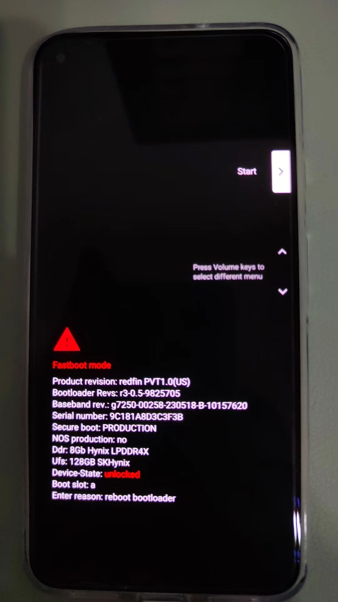
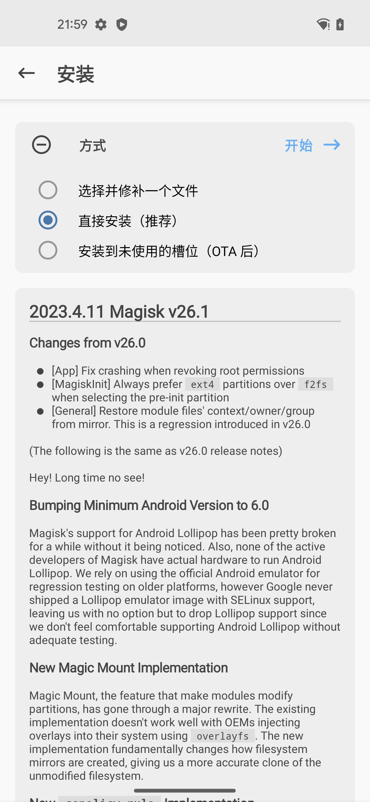
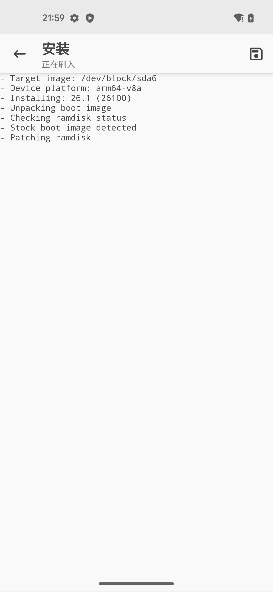
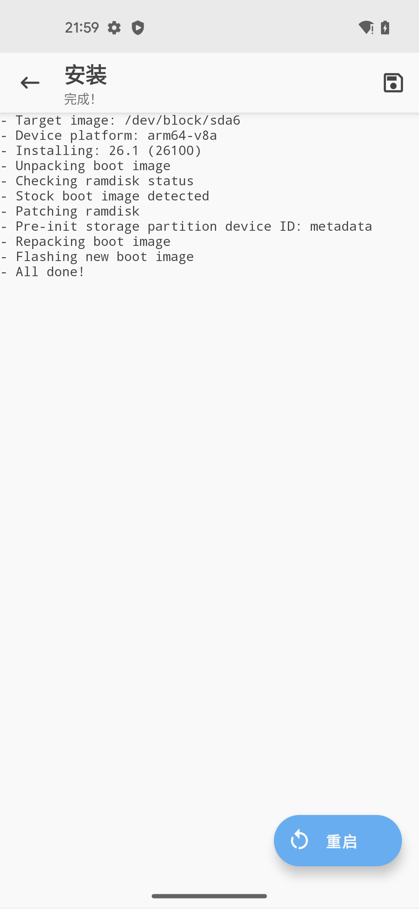
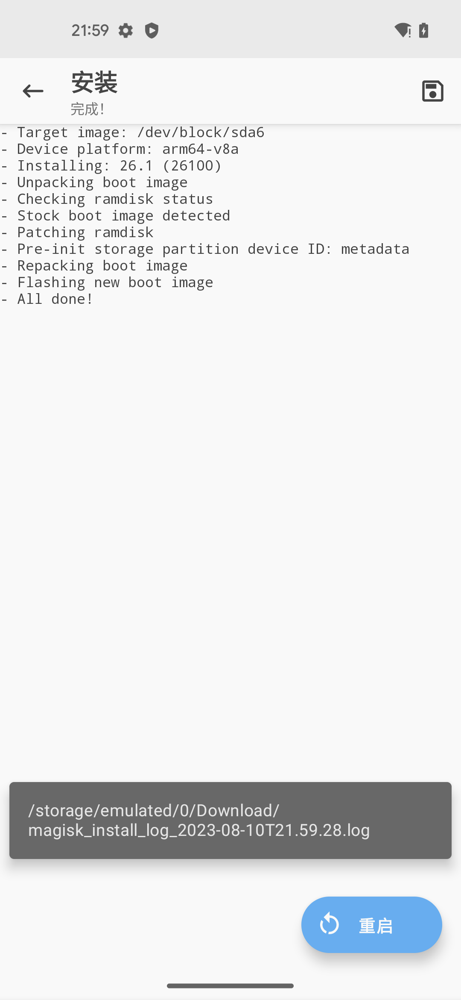

用Magisk写入patch后的boot.img
先临时写入patch后的boot.img，启动系统，使得Magisk有了root权限
（1）先：进入Fastboot模式：
adb reboot bootloader
重启后，手机进入Fastboot Mode:

注：
- 最好再用命令
fastboot devices确认的确进入了Fastboot mode == 可以找到Fastboot的设备➜ GooglePixel5 fastboot devices 9C181A8D3C3F3B fastboot
（2）再：（此处是临时）写入用Magisk打了patch的boot.img
fastboot boot magisk_patched-26100_tpJTt.img
- 说明
magisk_patched-26100_tpJTt.img是之前用Magisk打了patch后的boot.img- 输出举例
➜ GooglePixel5 fastboot boot magisk_patched-26100_tpJTt.img Sending 'boot.img' (98304 KB) OKAY [ 2.447s] Booting (bootloader) boot.img missing cmdline or OS version OKAY [ 1.591s] Finished. Total time: 4.077s
再用Magisk去永久写入（patch后的boot.img）
- 概述：
Magisk->安装->直接安装（推荐）->开始->重启 - 详解
Magisk->安装直接安装（推荐）- 
开始：正在刷入- 
重启- 
->效果：
重启后，Magisk就拥有了root权限了
-> 就成功实现了，用Magisk给Android13的Pixel5去root了
- 具体表现是：Magisk中的
超级用户和模块2个tab页，不是灰色
- 都可以点击进去了
- 超级用户=root
- 模块
- 超级用户=root
- 都可以点击进去了
附录：相关log日志
点击右上角的保存按钮：

可以保存出日志，导出到电脑：
➜ GooglePixel5 adb pull /sdcard/Download/magisk_install_log_2023-08-10T21.59.28.log .
/sdcard/Download/magisk_install_log_2023-08-10T21.59.28.log: 1 file pulled, 0 skipped. 0.3 MB/s (1942 bytes in 0.006s)
查看到日志内容：
magisk_install_log_2023-08-10T21.59.28.log
- Target image: /dev/block/sda6
- Device platform: arm64-v8a
- Installing: 26.1 (26100)
Parsing boot image: [/dev/block/sda6]
HEADER_VER [3]
KERNEL_SZ [11721709]
RAMDISK_SZ [1967466]
OS_VERSION [13.0.0]
OS_PATCH_LEVEL [2023-08]
PAGESIZE [4096]
CMDLINE []
- Unpacking boot image
KERNEL_FMT [lz4]
RAMDISK_FMT [lz4_legacy]
VBMETA
Loading cpio: [ramdisk.cpio]
- Checking ramdisk status
- Stock boot image detected
- Patching ramdisk
- Pre-init storage partition device ID: metadata
Loading cpio: [ramdisk.cpio]
Add entry [init] (0750)
Create directory [overlay.d] (0750)
Create directory [overlay.d/sbin] (0750)
Add entry [overlay.d/sbin/magisk32.xz] (0644)
Add entry [overlay.d/sbin/magisk64.xz] (0644)
Add entry [overlay.d/sbin/stub.xz] (0644)
Patch with flag KEEPVERITY=[true] KEEPFORCEENCRYPT=[true]
Loading cpio: [ramdisk.cpio.orig]
Backup mismatch entry: [init] -> [.backup/init]
Record new entry: [overlay.d] -> [.backup/.rmlist]
Record new entry: [overlay.d/sbin] -> [.backup/.rmlist]
Record new entry: [overlay.d/sbin/magisk32.xz] -> [.backup/.rmlist]
Record new entry: [overlay.d/sbin/magisk64.xz] -> [.backup/.rmlist]
Record new entry: [overlay.d/sbin/stub.xz] -> [.backup/.rmlist]
Create directory [.backup] (0000)
Add entry [.backup/.magisk] (0000)
Dump cpio: [ramdisk.cpio]
Patch @ 014B4FC6 [736B69705F696E697472616D667300] -> [77616E745F696E697472616D667300]
Parsing boot image: [/dev/block/sda6]
HEADER_VER [3]
KERNEL_SZ [11721709]
RAMDISK_SZ [1967466]
OS_VERSION [13.0.0]
OS_PATCH_LEVEL [2023-08]
PAGESIZE [4096]
CMDLINE []
- Repacking boot image
KERNEL_FMT [lz4]
RAMDISK_FMT [lz4_legacy]
VBMETA
Repack to boot image: [new-boot.img]
HEADER_VER [3]
KERNEL_SZ [11586555]
RAMDISK_SZ [2513635]
OS_VERSION [13.0.0]
OS_PATCH_LEVEL [2023-08]
PAGESIZE [4096]
CMDLINE []
- Flashing new boot image
- All done!
对比说明
注：
- 对比说明：
- 之前：
- 【未解决】给Android13的Pixel5刷入用Magisk去Patch后的boot.img
- 的操作是：
fastboot flash boot magisk_patched-26100_bMrsR.img - 意思是：
- 用Fastboot的flash一次性写入Magisk打了patch后的boot.img到boot分区
- 以及后续还有个额外的动作：绕过vbmeta的验证
fastboot flash vbmeta --disable-verity --disable-verification vbmeta.img
- 以及后续还有个额外的动作：绕过vbmeta的验证
- 用Fastboot的flash一次性写入Magisk打了patch后的boot.img到boot分区
- -》总之，最后导致了：
- 变砖卡死，进入了Android Recovery Cannot load Android system的页面：
- 【未解决】用Magisk给Pixel5去root重启报错：Android Recovery Cannot load Android system. Your data may be corrupt
- 而无法恢复，最终是：
- 【已解决】安卓手机Pixel5变砖无法启动系统卡死在Fastboot Mode
- 【已解决】尝试修复Pixel5卡死在Fastboot Mode：Android Flash Tool即flash.android.com
- 去用：
- 最终重新刷回了官网的Android13的ROM，而救砖成功的。
- 之前：